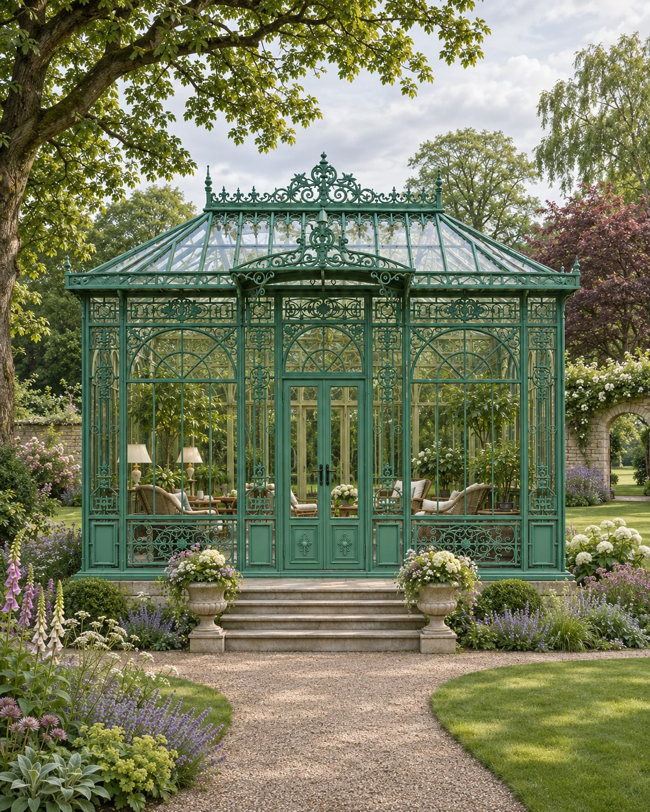

Garden glasshouse · Garden design concept
The Compact Glasshouse
The project
The Compact Glasshouse
The Compact Glasshouse brings the look of a Victorian garden glasshouse to a smaller plot. A central entrance, ornamental glazing and roof cresting give it presence, while the footprint stays modest enough for a town garden.
The image is a garden design concept. A glasshouse appearance alone does not establish a growing environment or a year-round comfort specification — those are agreed for each project.
- Structure
- Compact freestanding glasshouse
- Frame
- Painted green finish with roof cresting
- Roof
- Glazed pitched roof
- Base
- Low masonry base
- Stage
- Garden design concept
Form and detail
A low masonry base lifts the glazing off the lawn. Above it, the green frame carries a glazed pitched roof with decorative cresting along the ridge.
Inside, the compact plan suits potting benches and plants or a small seating area, depending on how the space will be used.
Garden design concept.
Design and build
Glasshouse or garden room?
Deciding whether a structure is for plants, for people or both changes ventilation, shading and glazing choices. We discuss this at the start of each project.
Similar designs

Develop your project
FROM A REFERENCE.
TO YOUR OWN SPACE.
Explore glass garden pavilions, compare the Compact Green Glasshouse and Pitched Green Glasshouse designs, or browse all garden glasshouse designs.
Share the setting and the direction you are drawn to, and we will discuss your garden project.
Your next space
LET’S BEGIN
WITH YOUR IDEAS.
Share the setting, the way you want to use the space and the designs you are drawn to.
Plan your project